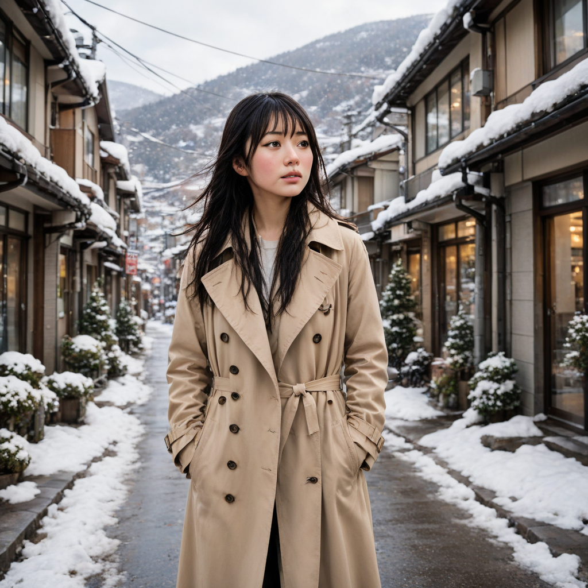
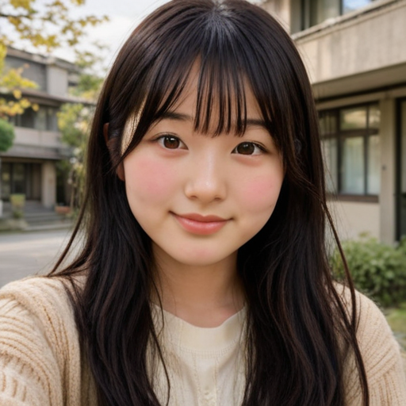
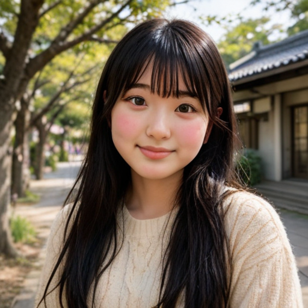
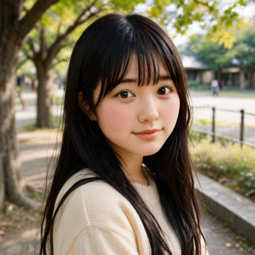
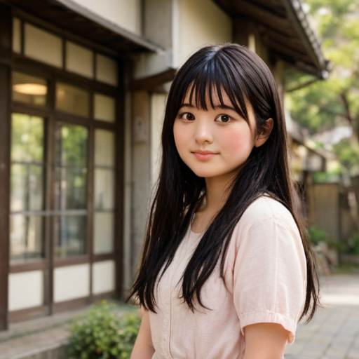
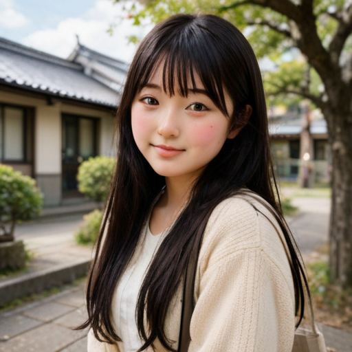
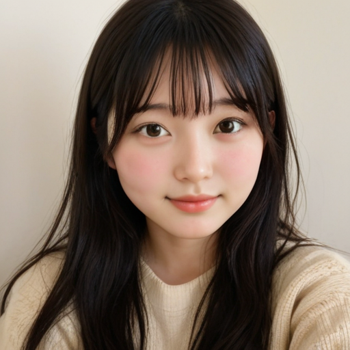
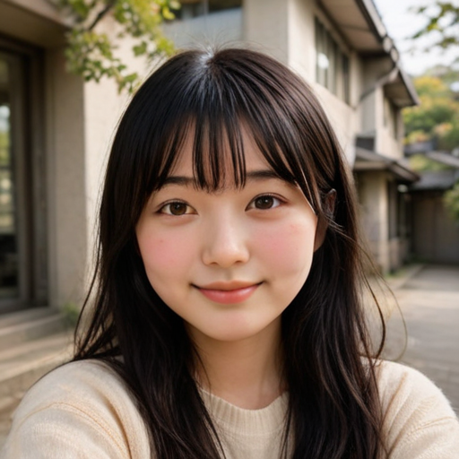

Featured Work
Tokyo, in twenty seconds.
Four connected scenes, one walk through Tokyo at dusk — Shibuya crossing, a lantern alley, a night market, and Tokyo Tower square.
Hiyori · Face Lock
One face, every scene.
A face-lock LoRA trained on Hiyori keeps the same face across outfits, scenes and shots. Same prompt, same scene — the difference is the LoRA.

First Frames
Eight scenes, one face.
Eight candidate first frames — same Hiyori, different outfits and scenes. Pick one, and the video follows it.
CafeSeed 201

CampusSeed 202

SnowySeed 203

SeasideSeed 204

NightSeed 205

CloseupSeed 206

SakuraSeed 207

ReadingSeed 208
Process
How a piece is made.
Lock the face
Train a LoRA on Hiyori so the face stays the same.
Pick a first frame
Generate candidate stills, choose the one that fits the scene.
Animate it
Turn the still into motion, scene by scene, frame to frame.
Finish
Cut the scenes together into one short film.
Contact
Work together?
Tell me what you have in mind. Your message goes through the form — nothing else about me is listed here.